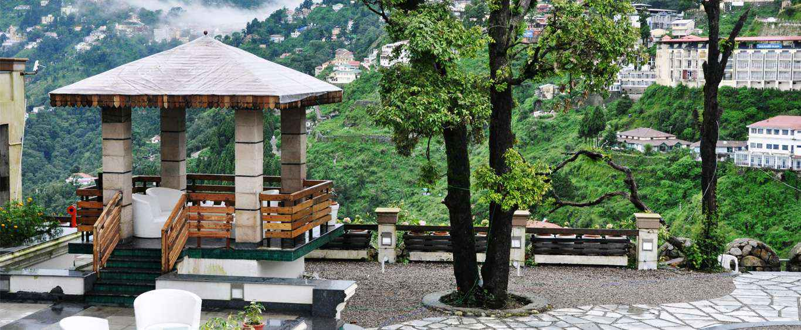
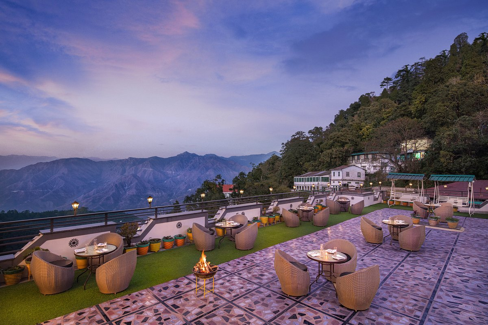

Royal Orchid Fort Resort
- Nestled amidst Garhwal's Shivalik and Himalayan ranges, Mussoorie,
also known as Queen of The Hills, stands above the rest with its deep
woods, favourable climate and mesmerizing views. Located amidst the
quaint valleys of Mussoorie, Royal Orchid Fort Resort, Mussoorie is
preferred by those who are looking for a quick weekend getaway,
honeymooners or simply to get away from the city yet close to the Mall
Road & expansive valet assisted parking.

- Contact: Tara Hall Estate, Picture Palace Road, Dehradun, Mussoorie,
Uttarakhand - 248179, +91 7895923001,
Website
Jaypee Residency
- Nestled at the hilltop amidst the serene queen of hills, Jaypee
Residency Manor is the best luxury resort in Mussoorie. It is
beautifully located at the ‘Hill Manor’ and offers a 360-degree
panoramic view of the Doon Valley & snow-capped Himalayas.

- Contact: Barlowganj, Mussoorie- 248122, +91-135-263 1022,
Website